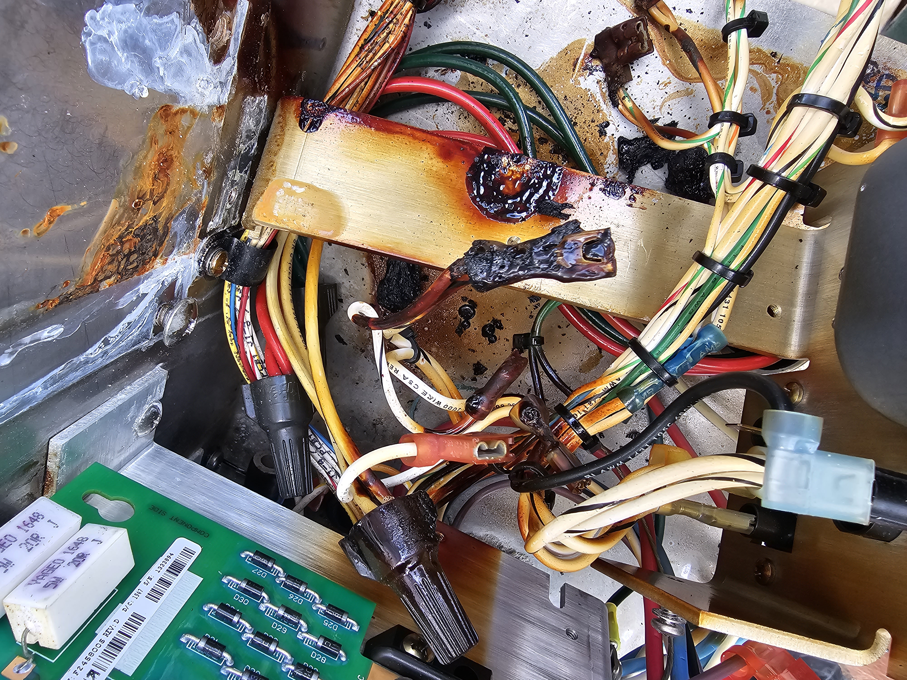
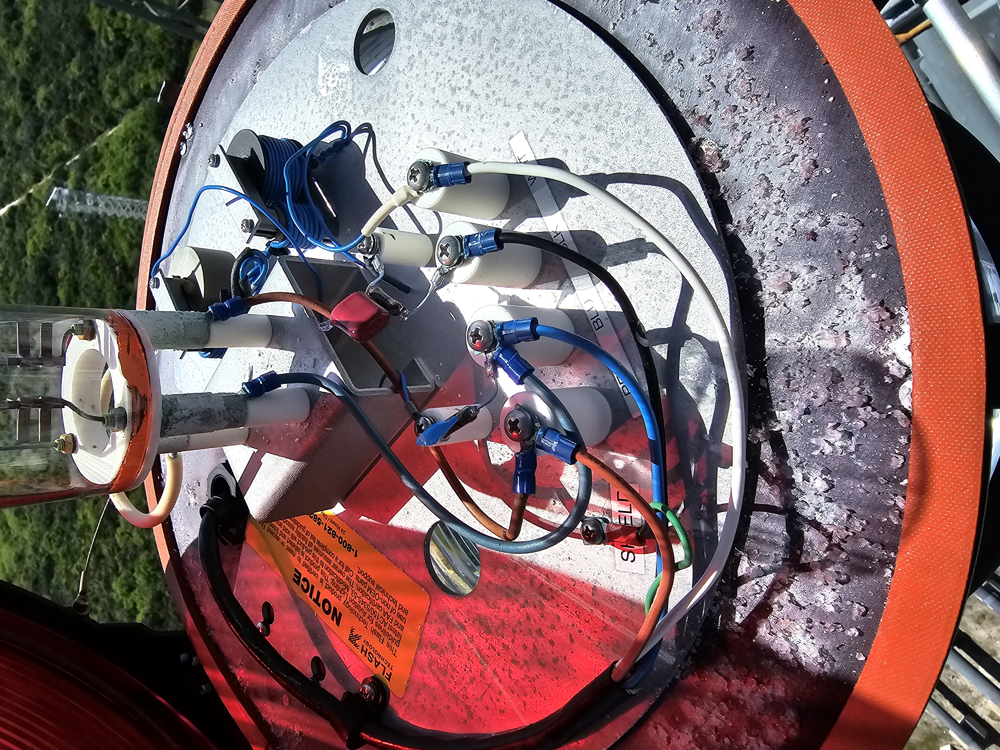

That was the phone call. No briefing packet. No site survey. No scope document. Just a problem and a question: can you fix it?
I should mention what else was happening when that call came in. We were in the middle of 236 buildings of BAS work at Camp Lejeune. A water treatment plant. A wastewater plant. A self-healing communications ring that served the entire base. The kinds of projects that do not pause because another opportunity arrives. The kinds of projects that consume your schedule, your crew, and most of your waking hours.
Everyone else said no. They did not have time. Schedules were full. Resources were committed. The math did not work.
I said yes, then built the plan fast enough to carry the weight.
Here is the thing about time that I have learned in fifteen years of mission-critical construction: you cannot find time. Time is not lost somewhere waiting to be located. But you can make time. You can plan with enough precision and execute with enough discipline that the hours exist for the things that matter, even when they should not, even when the schedule says otherwise, even when everyone around you says the math does not work.
The math always works if the planning is good enough.
The problem at Blue Origin was simple to describe and difficult to solve: their launch infrastructure at Kennedy Space Center had a compliance gap in its lighting, timing, and sequence systems that had led to recurring FAA-related penalties during periods of non-compliance. It was a live operational problem, not a paperwork problem. The kind that can stall programs, burn money fast, and cost people their jobs. The issue had already resisted multiple attempts at resolution.
We fit it in between everything else. We planned the travel, the tools, the staging, the rescue coverage, the carry order, the lodging, and the backup plans. We worked long weekends when schedules aligned, and we solved it with no delays and no schedule slip on anything else we were carrying at the same time.
This is what that took.
Two Towers. Two Completely Different Realities.

The first thing you learn at a launch complex is that not all structures are equal. The Vehicle Access Tower, the VAT, has a buck hoist. Mechanical lift. You load your equipment, your tools, your materials, and you ride up. The work at altitude is still demanding, technical, and unforgiving. But the hoist changes the physical calculus of the job fundamentally.
The Lightning Protection Tower, the LPT, has no buck hoist. No mechanical assist of any kind. Everything that goes up that tower goes up by hand. Every component. Every tool. Every piece of equipment. Every panel. Every spool of wire. Every connector, resistor, and transformer. Tethered, carried, climbed. One foot at a time for hundreds of feet in Florida heat, with the Atlantic breeze as the only relief available.
Before our first trip up the LPT, I established a complete equipment manifest and carry order. Every item staged at the base in the sequence it would be needed above. Every tether verified. Every load balanced. The discipline of that staging process is what made the work at altitude productive instead of chaotic. Because going back down is not a minor inconvenience. A round trip on the LPT is ninety minutes. Ninety minutes of climbing that costs energy the crew does not get back. One forgotten component, one unverified tether, one staging error, and ninety minutes are gone.
In a schedule built around long weekends and fitted between the demands of simultaneous major projects, ninety minutes is not recoverable. You stage correctly the first time. Every time.
There were moments on that tower when I needed to put eyes on the condition myself before the rest of the team committed to the next move. In high-consequence work, field leadership sometimes means taking on the uncertainty first so the crew does not have to. That is not a romantic statement. It is an operational one. When the clock is running and the conditions are changing, judgment matters. I was deliberate about those decisions, deliberate about the risk, and even more deliberate about making sure the team had what they needed before they ever left the ground.

Everything that goes up the LPT goes up by hand. One foot at a time. Stage correctly the first time or pay the ninety-minute price.
The Peregrine Falcons at 360 Feet

Nobody put this in the project specifications.
Peregrine falcons nest in the steel of the Lightning Protection Tower at approximately 360 feet. Active nests. Live eggs. A mated pair that has claimed this structure as their own and defends it with the full conviction of apex predators that have no natural enemies and no concept of construction schedules.
The first time one of my crew came down from that level looking slightly rattled, I asked what happened. He said a bird had circled him twice and then made a dive pass close enough that he heard the air move. I knew exactly what we were dealing with. Peregrine falcons are the fastest animals on earth in a dive, over 240 miles per hour, and when they perceive a threat to their nest they respond with precision and without warning.
We adapted. You respect the environment you are working in. These birds were nesting in this steel before any of us arrived, and they will be there long after every contract is complete and every crew has moved on. When you are working at 360 feet in their home, you are the guest. You move deliberately. You do not linger near the nest. You complete your work with the efficiency the environment demands, and you leave.
We completed everything required at that level without incident. Not because the birds accepted us. Because we accepted them first. That acceptance, that fundamental respect for the conditions of the environment you are operating in, is a discipline that applies at every altitude and in every project context. The professionals who succeed are the ones who adapt without resentment and without delay.
The site always has conditions you did not anticipate. Adapt without resentment and without delay.
Plan Your Tacos. Do Not Leave Them in the Truck.
This is not a metaphor. This is operational guidance.
A ninety-minute round trip on the Lightning Protection Tower burns a significant amount of energy. When you have a crew at 500 feet doing precision electrical work in heat and coastal wind, they are running entirely on whatever they had before they left the ground. There are no vending machines at 500 feet. Once the crew is up, they are up until the work is done.
On one of our longer days, I brought food up. Tacos, as it happened. Wrapped, tethered to my pack alongside everything else, carried up the same way every other component was carried up. When I distributed them at 500 feet, the reaction from the crew was entirely disproportionate to the gesture. These were not extraordinary tacos. They were adequate tacos from a place near the hotel. But at 500 feet, after four hours of precision work with two more hours ahead, they were the best tacos anyone on that crew had eaten in recent memory.
The General Superintendent's job is not to be the most technically capable person on the site. That matters, and I have earned that capability over fifteen years. But it is not the job. The job is to make every other person on the site more capable than they would be without you. Sometimes that means solving the complex circuit fault. Sometimes it means recognizing that your crew has been up since 0500 and will not eat again until they are off that tower, and that you can do something about that.
Plan your tacos. Do not leave them in the truck.
The General Superintendent's job is to make every other person on the site more capable than they would be without you.
What 400 Feet Does to a Transformer

We had established barricade zones around the base of the LPT for exactly this reason. Anything moved at altitude carries consequences out of all proportion to its size once gravity has room to work. The physics are not ambiguous about this.
At one point, we made that reality visible on purpose.
In a controlled drop into a cleared, barricaded zone, we sent a transformer 400 feet to the ground.
It made a crater. And then it bounced.
There is a difference between understanding drop hazards intellectually and watching what 400 feet does to a piece of electrical equipment you normally handle at ground level. A transformer is familiar in your hands. Routine. Manageable. From altitude, it becomes impact energy with a shape.
I want anyone who works at height, or who manages people who do, to sit with that. Not as drama. As calibration. Because once you have seen what that kind of mass does after 400 feet of acceleration, you stop treating barricade zones like procedural formality and start treating them like what they are: life-safety controls.
After that, binoculars became standard equipment on every trip to the LPT. Not optional. Standard. Required before any instruction that could result in equipment movement at altitude. You need to see exactly what is happening above you. You need to verify the tether is secured before you give the signal. You need to confirm the barricade zone is clear and will remain clear. You need to see it with your own eyes.
Communication at altitude is not a best practice. It is a life-safety system. Build it that way and treat it that way, every time.
Communication on that project was not a best practice. It was a life-safety system. The distinction matters because best practices get set aside when schedules are tight and pressure is high. Life-safety systems do not. We had no incidents on that project. That outcome was not luck. It was the direct result of building communication protocols that could not be bypassed, because everyone understood exactly what gravity was capable of doing if we got casual.
Fix the Crane. Do the Hard Way Once.
The first trip up the LPT was fully manual. Every component carried by hand. It had to be. The crane serving that structure was non-operational when we arrived, one more item on the list of deferred maintenance that had contributed to the compliance failures we were there to resolve.
We did it the hard way. We planned every carry meticulously, staged everything at the base, verified every tether, and climbed. It was slow. It was physically demanding. It was the only available option at the time.
And then we fixed the crane.
This was not in my original scope. Nobody asked me to fix it. But I was not going to put my crew through another fully manual load-out if a mechanical solution was available and within our capability to restore. The electrical fault was diagnosable. We diagnosed it. We corrected it. On subsequent trips, what had taken hours of careful manual carrying became manageable equipment lifts.
The principle is simple: do the hard way exactly as many times as necessary. Then fix the process so nobody has to do the hard way again. Never normalize inefficiency. Every time you encounter a process that is harder than it needs to be, you are looking at an opportunity. The crew that does the hard way once and then solves it is the crew that has capacity for the next hard thing. In mission-critical work, there is always a next hard thing.
Do the hard way exactly as many times as necessary. Then fix the process. Never normalize inefficiency.
Build the Team the Problem Requires

Before we set foot on a launch structure, I assembled a crew specifically for this engagement. One master electrician. Two journeymen. One apprentice. A controls technician. A communications specialist. A crane operator. A dedicated safety manager.
Then I got every member of that team certified in high-angle tower climbing and rescue. Including the project manager. Including the field engineer. Everyone.
Not because everyone would climb operationally. Because everyone needed to understand at a physical level what the crew working above them was experiencing. A project manager who has been up that tower approves the schedule differently. A field engineer who has felt that wind plans the equipment staging differently. Shared context produces better decisions at every level of the organization.
I want to tell you about my safety manager.
He pushed through the certification in obvious pain. The instructor had concerns, and so did I.
He completed the training and earned the credential. That mattered. But my responsibility did not end with the card. My responsibility was to make the right operational decision for the field, and I made it immediately: he would serve as safety leadership on the project, but he would not be assigned tower climbing work under my watch.
That distinction matters. Training completion and field assignment are not the same decision. In high-consequence work, credentials matter, but judgment matters more. Knowing what each person on your team can do, what they should do, and where they create the most value is part of the job. Making that call clearly and early is what keeps people alive and careers intact.
Knowing what each person on your team can and cannot do, and being honest about it in both directions simultaneously, is what keeps people alive and careers intact.
The Conversations That Happen at 500 Feet
There are conversations that happen at 500 feet that do not happen anywhere else.
When the ground is that far below you and the wind is moving and nobody else can hear, something opens up. The noise of the ordinary world falls away. The performance that people maintain at ground level, in meetings, on jobsite radios, over lunch, it does not survive altitude. People say things they have been carrying for years. They ask questions that matter. They talk about where they are going and whether they are heading in the right direction.
I had those conversations. On the LPT. On the VAT. Clipped into the steel with the Atlantic stretching out below us and the launch complexes visible in every direction. Real conversations. The kind that adjust trajectories.
I still talk to those people. I know what happened after. I know which directions changed and which decisions got made differently because of what was said at altitude. I know the careers that bent toward something better, the paths that corrected, the confidence that got found in a person who did not know they had it until a conversation 500 feet above the ground made it impossible to pretend otherwise.
Every single one of those conversations adjusted a trajectory. Not because I said anything extraordinary. Because altitude has a way of making people honest with themselves in a way that sea level rarely demands. You cannot maintain comfortable illusions at 500 feet with the wind moving and the ground that far below. You are exactly who you are up there. And sometimes that is exactly what someone needs to see.
That is something no scope of work captures. No deliverable documents it. No client ever pays for it directly. But it may be the most valuable thing that happens on a tower.
You cannot maintain comfortable illusions at 500 feet. You are exactly who you are up there. Sometimes that is exactly what someone needs to see.
The FAA Fines Stopped

The technical solution involved corrected sequence logic, replaced components across multiple systems, rebuilt communication pathways between the launch tower infrastructure and the range safety systems, and a comprehensive documentation package that gave the FAA everything required to verify compliance and formally close every outstanding finding.
But the technical solution was the last twenty percent of the work. The first eighty percent was everything described above: saying yes before knowing exactly how, listening before acting, assembling the right team, getting that team to altitude, making hard calls about who was credentialed and who was operationally suited, doing it the hard way once and then fixing the crane, planning the food, respecting the falcons, treating communication as life safety, having the conversations at 500 feet that do not happen anywhere else, and fitting all of it between 236 buildings at Camp Lejeune and a water treatment plant and a wastewater plant and a self-healing communications ring.
When the fines stopped, nobody celebrated a specific resistor or a specific circuit. They celebrated the outcome. The project manager said afterward that the reason it worked was not any single technical decision. It was that everyone understood from the first day that failure was not an option, and then we built a system where failure genuinely was not an option. Not by trying harder. By designing out the conditions under which failure could occur.
Not by trying harder. By designing out the conditions under which failure could occur.
What Cape Canaveral Looks Like at Night
In the evenings after the crew wrapped, I would sometimes drive through the Kennedy Space Center grounds with the windows down. Major Tom playing through the speakers. The Space Coast at dusk looks like another planet. Launch complexes standing in the flat Florida landscape. The smell of the Atlantic. The particular silence of a place from which human beings have been launched into orbit.

I watched live SpaceX launches from close enough range that the ground shook before the sound arrived. When the sound arrived, it hit you in the chest. It is one of the most visceral reminders I have ever experienced of what human engineering can accomplish when everyone in the chain does their part without compromise.
I watched sea turtles hatch and make their way to the ocean while conducting lighting inspections on the launch tower. Ancient creatures navigating by the light of the horizon, walking past the boots of the people building the infrastructure that sends other humans toward the stars. The turtles were there before the launch pads existed. They will be there after everything we built has been decommissioned and replaced.

I climbed a water tower so large it altered your sense of scale. Not because my scope required it. Because understanding a place means understanding it from every angle available to you. I lay on top of it and looked at the Atlantic and the launch complexes and thought about what it means to build things that matter in places that matter for purposes that extend well beyond any single career or contract.
The peregrine falcons nested in the steel of that tower because the structure became part of their world. The sea turtles found the ocean navigating past the infrastructure of the space age without breaking stride. Both were there before us. Both will remain after us.
Mission-critical work is not just technical. It is human. The professionals who do it best are not just skilled. They are present. They pay attention to everything around them, not just the work directly in front of them. They understand that the systems they build exist inside larger systems: ecosystems, communities, histories, futures.
Pay attention to everything. Not just the work in front of you. The systems you build exist inside larger systems.
The Next Standard
There is a certain longing that comes after you accomplish something significant. You climbed the tower. You fixed the problem. The fines stopped. Good. Then comes the next question: what now?
My answer is that the next thing does not need to be louder. It needs to be approached with the same standards. The same attention. The same willingness to say yes before the process exists and then build the process well enough to carry the weight.
We did the Blue Origin work between everything else because we made the hours exist through planning, execution, and disciplined backup planning. Not because we had more time than anyone else. Because we paid closer attention to what the work actually required.
That is still the lesson. Say yes when the problem is worth solving. Plan accordingly. Build the best emergency backup plan you can. Know your people. Know who should climb, who should not, who needs food at 500 feet, who needs a hard conversation when the wind is moving and nobody else can hear. Respect the falcons. Fix the crane. Document the thinking, not just the work.
You cannot find time. But you can make it. And it will make you.
Pay attention, and you will go a long way in life.